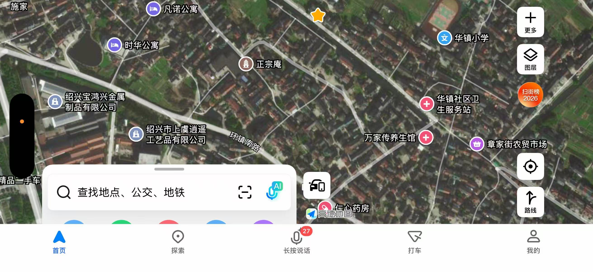

雁埠今地考 · 沧海桑田
标 ★ 者为谱内外双向咬合之处
〇、一句话结论
谱里的「雁埠」，就是今天绍兴市上虞区崧厦街道的「华镇片」——章家村、陆家村、时华村、西华村、三华村、内五甲村。
- 你家老宅所在的 章家村（原章家街、临江、联兴、章家四村，2006 年合并），就是谱里的「章家」；
- 谱中作为六十余处墓地坐标原点的「正宗菴」，今天仍以「正宗庵」之名立在环镇南路上（公交站：裴家、崧华学校南、章家村 2、老三楼、崧华学校、时华村）；
- 谱里的「雁埠渡·章家义渡」，即后来的三甲渡——但它今天已从地图上消失：2006 年三环大桥建成后停渡，且没有一座桥承其名（详见 §三·第三变）；
- 谱里「江水數數爲患」的那条娥江，东岸如今是一片建制村、工业园与农贸市场。
沧海桑田，不是形容词，是这片地的履历——雁埠本来就是曹娥江下游淤出来的滩涂草荡，明清两代在此设盐场「雁埠团」；章氏自宋末迁来，在这片逐年长出来的沙地上聚族而居，八百年长成一个行政村。
一、凭什么说「雁埠＝崧厦章家村」：五重复合证据
1.1 民国《崧厦志》直书「遂家雁埠」★
与家谱卷一〈序〉、卷八〈晦武公传〉同源。
1.2 《丁地考》给「雁埠团」定了四至 ★★
同文又载：清乾隆五年（1740）分设金山盐场，「下辖百官、雁埠、塘湾、东团共 4 团 31 灶」；「雁埠团滩涂广袤、水草丰盛，成为上虞最为重要的盐业作业区之一」。
与家谱咬合：谱卷十六载乾隆三十五年丈「雁埠團沙地」，族先祖章大輔 66 官丁、章輈 10、章振維 1.597，与外姓鄭美 9 四户在金山場認糧——「雁埠团」「金山场」「认粮」三个专名，与网文完全对得上。
1.3 「章家义渡」：同一个「章长庆」★★★
| 出处 | 原文 |
|---|---|
| 家谱 卷十三〈祠產〉 | 邑志所載章家義渡……其創設爲咸豐十年……渡之田產有四十餘畝……毋論遠近客商概不准收取分文；章長慶倡設 |
| 《三渡六桥说今古》 | 一曰章家義渡，距崧廈市十里……該渡由清代章氏里人章長慶、鄭國彪等捐田而設。後因沿江成村落曰懸沙，設有頭、二、三、四、五甲村，因渡口近三甲村，而改稱三甲渡。 |
人名（章長慶）、事由（捐田设义渡）、地名（章家义渡→三甲渡）三项全对——这是「谱中章家村＝今日章家村」最硬的一环。
1.4 《章滌園傳記》：在现世文献里找到了你们谱的同族人 ★★★
光緒戊戌年（1898）章先生與其兄弟發起募款，修建樾蔭公所，地址在聰房道地北……又於樾蔭公所內，設水龍局。設立五甲渡義渡……可去章家廟領取救濟。章家村地處江濱。 《章滌園傳記》，上虞论坛
与家谱三处咬合：
- 世次：27 世——受田公一脉正是 26 世銘廿公 → 27 世檢三十七公（章滌園与受田公的高祖同辈）；
- 房名：「聰房道地」——家谱五房，正有聰房（泰二公房）；
- 公所：家谱卷十二〈營建〉「顏其額曰越蔭，內設掩埋、水龍兩舉，壬寅冬邑令儲家藻頗嘉之，爲撰徵信錄序」——「樾蔭／越蔭」同音、「掩埋＋水龙局」两项全同、时间（1898 建、1902 邑令嘉奖）前后相续。
小异：网文作「绍兴知府储永藻」，家谱作「邑令储家藻」，或为传抄之误，不影响互证。
1.5 正宗菴：谱中坐标原点，今日仍是地图 POI ★★
| 家谱 册01 卷三 p148 | 「道九墓在正宗菴面前麻地」（道九公＝相、聰、和三房共祖） |
| 家谱 卷一 | 「我始遷祖奎文公墓，相傳在本村前麻地」 |
| 今日地图 POI | 正宗庵：浙江省绍兴市上虞区环镇南路；周边公交站 裴家、崧华学校南、章家村 2、老三楼、崧华学校、时华村 |
→ 谱里以「正宗菴」为原点的六十余处墓地，全部落在今日章家村／华镇片一两公里半径之内。这等于给整部家谱的墓地记载配上了现代坐标。
二、古今地名对照表
| 谱中地名 | 类别 | 今日对应 | 依据 |
|---|---|---|---|
| 雁埠（一作雁步） | 村 / 团 | 崧厦街道华镇片（章家·陆家·时华·西华·三华·内五甲） | 民国《崧厦志》／《丁地考》 ★ |
| 章家、章家街 | 村 / 街 | 章家村章家街自然村（今有章家街农贸市场） | 2006 年村规模调整文件 ★ |
| 正宗菴 | 庵 | 今 正宗庵，环镇南路 | 地图 POI ＋ 用户截图 ★ |
| 章家廟 | 庙 | 章家村内旧庙（义渡亭所在） | 谱卷十三 ／《章滌園傳記》 |
| 樾蔭公所（越蔭） | 公所 | 原在「聰房道地北」，今无存 | 谱卷十二 ／《章滌園傳記》 ★ |
| 雁埠渡·章家義渡 | 渡 | 旧称 三甲渡（曹娥江东岸）——已废·名亡：2006 年三环大桥建成后停渡，今图上不可寻 | 《三渡六桥说今古》 ★ |
| 西華義渡 | 渡 | 旧称 五甲渡——已停渡·名存：今有五甲渡大桥、五甲渡城市公园 | 《三渡六桥说今古》 ★ |
| 趙村義渡 | 渡 | 后与吕家埠渡合并，今存 吕家埠渡名 | 《三渡六桥说今古》 |
| 懸沙（捏鰨塗） | 江湾 / 沙地 | 曹娥江「Ω」形大弯圈内滩地＝谱中雁埠團沙地；1995—1998 裁弯取直，今 外五甲村 一带 | 《三渡六桥说今古》／绍兴市水利局 ★ |
| 雁埠塘、大沙牆 | 塘堤 | 百沥海塘（曹娥江东岸）一线 | 谱卷十二 ／《丁地考》 ★ |
| 西華塘·西華廟·西華周家塘 | 塘 / 庙 | 西华村 | 村名 ＋《三渡六桥》西华捐田诸姓含「周」 |
| 章陸村（義塚） | 村 / 冢 | 章家＋陆家一带（网文即称「章陸章家村」） | 《章滌園傳記》 ★ |
| 九都八里、九都華澤口 | 建制 / 坊 | 九都＝崧厦旧都图；華澤 今 丁泽村 | 谱卷十二 ／ 2006 年合并文件 |
| 雁埠團（金山盐场） | 盐场 | 崧厦曹娥江东岸沙地平原 | 《丁地考》 ★ |
| 內外十戸 | 团甲 | 今 内五甲村·外五甲村（悬沙头～五甲村） | 《三渡六桥说今古》 |
| 前麻地（始祖墓） | 墓地 | 章家村前，约当正宗庵—环镇南路一带 | 谱卷一 ／ 册01 卷三 p148 |
三、沧海桑田：这片地变过四次
第一变：江 → 陆（最根本的一变）
家谱说雁埠「地瀕娥江下游，江水數數爲患」；《丁地考》解释了水患的另一面——它同时在造陆：
于是：滩涂草荡 → 盐场团灶（雁埠团）→ 明清围垦沙地 → 乾隆三十五年丈量认粮 → 今日建制村与工业区。谱里那批「珠字一千三百十三號田」「珠字一千四百號地」的字号田，就是这套沙地丈量体系的遗痕。
今日：图上已是绍兴宝鸿兴金属制品、上虞逍遥工艺品等企业与公寓楼、农贸市场——当年煎盐的草荡，如今是崧厦伞业的厂房（章家村经济素以建筑业、伞业为主，2021、2022 连年上榜「淘宝村」）。
第二变：患 → 治
第三变：渡 → 桥（附：三渡的三种结局）
谱里「雁埠渡南通會稽」，义渡章程写明「毋論遠近客商概不准收取分文」——那是靠捐田四十余亩养一只渡船的年代。
《三渡六桥说今古》记崧厦渡娥江旧有三渡，各自因江边聚落而改名：
| 旧渡 | 改名 | 倡设 / 位置 |
|---|---|---|
| 章家義渡 | → 三甲渡 | 清章長慶、鄭國彪等捐田而设；距崧厦市十里，南出去曹娥、章镇、嵊县 |
| 西華義渡 | → 五甲渡 | 西华桑、顾、王、周、蒲诸姓捐田；在章家义渡西约五里，对岸塘角村 |
| 趙村義渡 | → 吕家埠渡 | 光绪十三年连氏敬睦堂置田设渡；后江道变迁而与吕家埠渡合并 |
★ 关键：三渡的结局并不相同
| 渡 | 停渡 | 原因 | 今名 |
|---|---|---|---|
| 三甲渡 | 2006 年 | 原三甲渡稍东建成市三环线桥（三环大桥／梁祝大道，329 国道北移），「自该桥建成后，三甲渡即失去作用而停渡」 | 名亡——无桥承其名；兼之 1995 年裁弯取直后江道改移，原渡口已不在今江边 → 今日地图上不可寻 |
| 五甲渡 | 1995—1997 | 1995 年裁弯取直开工之前，先于平地上构筑「五甲渡桥」，「自该桥建成后，五甲渡、吕家埠渡同时自行消失其功能」 | 名存——1997 年配套桥、2013 年南北中心大道桥皆名「五甲渡大桥」；2025 年 3 月开园 五甲渡城市公园（56 万 m²，官方与媒体径称「千年古渡口」，央视《你好时光》取景地） |
| 吕家埠渡 | 1995—1997 | 同上（赵村渡与吕家埠渡合并后之渡） | 名存——吕家埠村在曹娥江东岸、南靠五甲渡大桥 |
这两渡的江面上，现在是六座大桥
原三甲渡稍东为市三环线桥（2006）｜三甲渡与五甲渡之间为市四环线大桥（虞舜大桥，2008）｜该江段最早建成者为五甲渡桥（1995）｜其东南首为绍诸高速延长线（长海公路）曹娥江大桥｜离五甲渡桥数百米为杭甬客专曹娥江大桥（2013）｜吕家埠渡稍东为杭甬高速曹娥江特大桥（1996）。
顺带解开一处：「悬沙」是什么
《三渡六桥》说「后因沿江成村落曰悬沙，设有头、二、三、四、五甲村」——这个「悬沙」，就是曹娥江在此画的那个「Ω」形大弯圈内的滩地（俗称「捏鰨塗」，外五甲村即其东北角）。
这正是谱里「雁埠團沙地」的真身：江水绕弯则缓，缓则泥沙沉积、滩地年年增长——雁埠团之所以煎得出盐、丈得出「沙地」认粮，全因这一弯。1995 年 12 月—1998 年 6 月的裁弯取直，以 1700 米微弯河道取代了 7300 余米的「Ω」形河湾，一次投入七千多万元、挖填土方 219.8 万方；老江道从此成为故道。
旁证：外五甲村相传即明末清初章氏来此开荒所立，「村里以章姓为主」；1990 年那场特大洪水曾淹到两米多高的楼板，联合国粮食署据卫星照片发现「浙江上虞有一个村庄经常受淹」，派员赴外五甲村调查——这就是裁弯取直的由来。
第四变：族 → 行政村
| 年代 | 建制 |
|---|---|
| 宋末—清 | 雁埠团（盐场）／九都八里的章氏聚族而居；五房分宗，立相聰和三房宗祠 |
| 1956 | 初级社并高级社（临江、光明、联兴、三爱等） |
| 1983 | 章家街、联兴、章家、临江四个村民委员会 |
| 1992.4 | 华镇乡并入崧厦镇（联丰、华镇、新建三乡并入） |
| 2006.4 | 章家街、联兴、章家、临江四村合并为章家村（2437 户、6685 人，约 3.5 km²） |
| 2019 | 崧厦镇改为崧厦街道 |
你家老宅「西河沿台门」就在这个"章家"老村中心——你截图里显示的章家街农贸市场与正宗庵之间，正是谱中「章家」「章家廟」所在的位置。
四、图证：谱页 ↔ 今日地图

版心标「相聰和祖」——相、聰、和三房共祖

西南为章家街农贸市场——两页相隔七百年的同一块地
五、关于老宅「西河沿台门」
- 谱里查不到（「西河沿」0 处、「台門」0 处）——谱例只记祠、庙、庵、亭、坊、墙、渡、冢，民居台门一概不入谱，找不到属正常。
- 但今地完全合拍：雁埠临娥江、有水有塘，村中河沿台门是典型的水乡形制。
- 可实地核的锚点：以正宗庵（环镇南路）＋章家街农贸市场为中心，问一句「西河沿台门在哪条河沿上、属哪一房（大房/二房…）」，即可定到具体地块。
六、存疑与待核（如实并陈）
- 「雁埠」今有两处自称：章家村（据章氏谱）与 吕家埠（自述原名雁埠，后因成为崧厦内河对外港口而改名）。《丁地考》把「雁埠」作整团之地名（西至吕家埠），故两说并不相斥——都是雁埠团故地；而「雁埠渡」因倡设人为章氏章长庆，判归章家义渡。
- 雁埠团的精确四至与亩数，需核对嘉庆《两浙盐法志》盐场图，及《丁地考》所引 1979 年卫星锁图。
- 「华镇」得名（是否与谱中「九都華澤口」同源）待考——今华泽已并入丁泽村。
- 「内五甲 / 外五甲」是否即谱中「雁埠團分內外十戶」——今可基本对应（内外五甲村即悬沙之头～五甲村），但「内／外」之分是否等同谱中「内外十户」，仍待核。
- 三甲渡旧址的确切位置——谱与网文只记「距崧厦市十里」「原三甲渡稍东为市三环线桥」，未给经纬度；今地名已不可检索，地图上只能据 三环大桥 定位，待实地核。
- 「市三环线桥」是否即「曹娥江三环大桥／梁祝大道」——两处记载建成时间同为 2006 年、同为 329 国道北移所建，判为同一桥，待核。
- 章家庙、樾荫公所今是否尚存（祠堂四座今存否）——需实地走访。
- 谱中「章陸村」 是否即今陆家村，抑或章家＋陆家合称，两说并存。
七、来源清单
谱内
册01 卷一〈序〉、卷三〈雁埠總世錄〉p144／p148；册08 卷五中；册09 卷十二〈營建〉、卷十三〈祠產〉；册10 卷十六〈雜記〉
谱外
- 夏军波《丁地考——以上虞金山盐场「雁埠团」为例》，今日头条 toutiao.com/article/7333203613126771254
- 蕞尔小民《三渡六桥说今古》，乡土文化网 xtwhw.cn/show.html?dir=2016/9/14&id=2418
- 《章滌園傳記》，上虞论坛 bbs.0575bbs.com/read-htm-tid-985842.html
- 民国《崧厦志》（经博雅地名网转录）tcmap.com.cn/zhejiangsheng/shangyu_xiazhen_zhangjiacun.html
- 上虞区人民政府《关于调整崧厦镇行政村规模的批复》（2006-04-20）
- 崧厦街道办事处〈关于进一步明确新居民子女入学工作意见的通知〉（华镇片六村名单）
- 崧厦街道（百度百科）：1992 年联丰、华镇、新建三乡并入；2019 年设街道
- 城市吧绍兴站 正宗庵 POI（环镇南路）shaoxing.city8.com/scope/8ci6iz781manb04952_address
渡口兴废（2026-10 补查）
- 蕞尔小民《风雨沧桑五甲渡》，上虞论坛 bbs.0575bbs.com/read-htm-tid-899701.html
- 蕞尔小民《外五甲村——曹娥江畔的一颗明珠》，乡土文化网 xtwhw.cn/show.html?dir=2016/12/3&id=2807
- 《五甲渡》，网易转载 m.163.com/news/article/D4FMNDUB000187VE.html
- 〈一条母亲河：娥江嬗变「三部曲」〉，绍兴日报（绍兴市水利局转载）slj.sx.gov.cn/art/2021/4/26/art_1485336_58921395.html
- 〈曹娥江河口的治理与开发〉（徐佳法、来移年）
- 〈桥见新时代！吉象带你打卡上虞的桥〉，潮新闻 tidenews.com.cn/news.html?id=2919994
- 〈五甲渡城市公园开园〉，绍兴日报 2025-03-31；〈上虞：曹娥江畔奏响水韵华章〉绍兴市水利局 2025-04-17；〈护好母亲河 水清又生金〉浙江日报 2025-08-27
- 上虞区农村公路桥梁健康监测项目合同公告（曹娥江三环大桥建成于 2006 年，位于 X530 南湖—春晖立交）